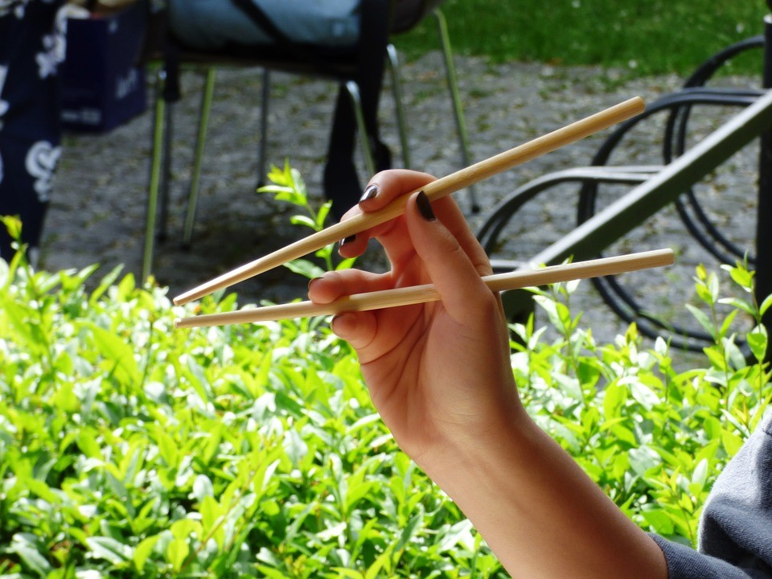
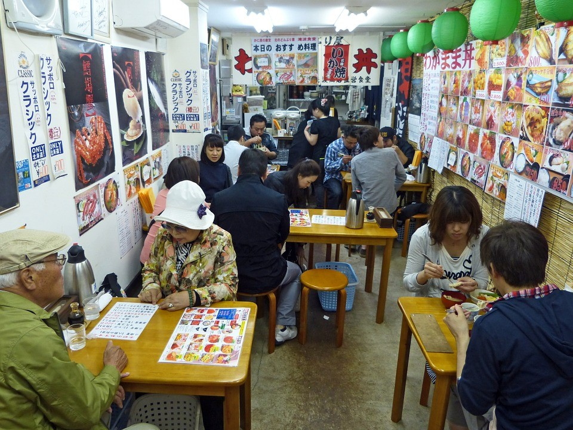
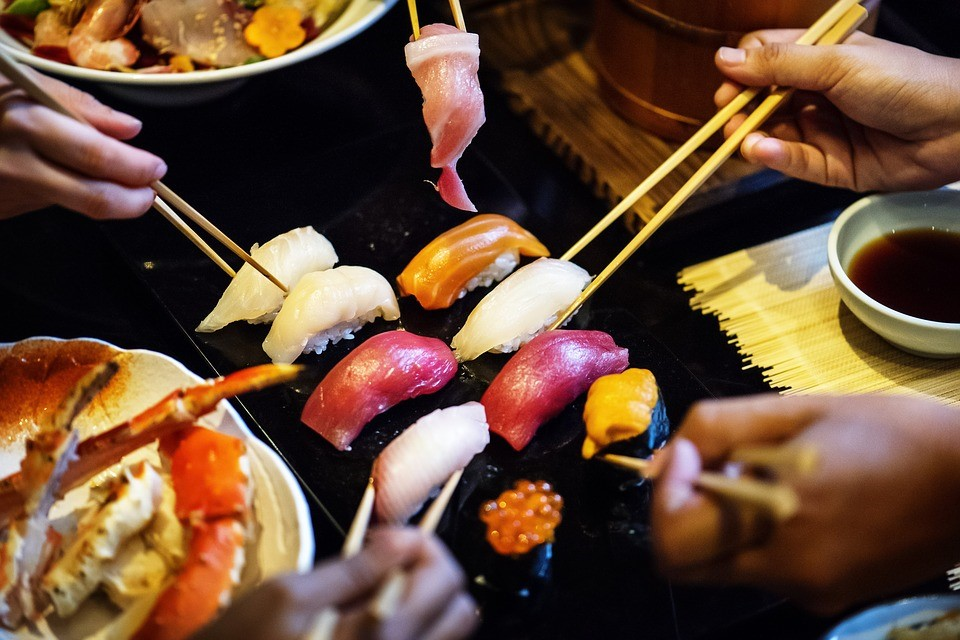
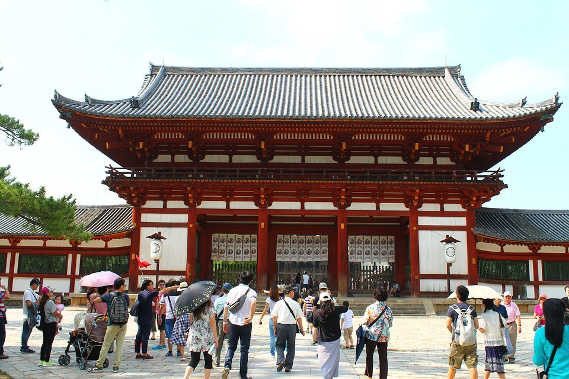
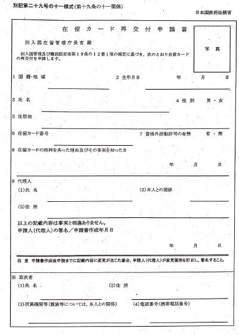

Customs and Etiquette Guide
Created by Bikalpa Bhattarai
For several 1st-time visitors, Japanese cultural values could be intimidating. But don't be amazed! A very complex code on decorum and culture has also been developed by Japan's 5000-year ancient civilization. And do not panic – you can easily manage the fundamental rules of the Japanese moral code with a small portion of society. But, you will also be pleased to know that the Japanese generally are pretty trying to excuse when visitors in the Etiquette Agency fuss about stuff. I read many customs and hygiene journals until I make my report to Japan to get prepared, and I'll be pleased to discuss what I've discovered. Here Is the Survival kit to Japanese Etiquette and Customs, from respectful forms of greeting to gaffe.
Meeting Etiquette
To relish the trip, it is important to know what to tell him to Japanese. That little Japanese understanding would not only offer many sighs, this also shows respect after interest in the culture.
Basic Japanese Greetings
Ohayo Gozaimasu - Good Morning / Hello
Konnichiwa - Good Afternoon
Konabanwa - Good Evening
Oyasumi nasai - Good Night
To Bow or Not To Bow
Normally they bow each other rather than shaking the hands if Japanese meet, convey thanks or tell goodbye. A bow size relies on both the relative status and relationship of both the two individuals. Extranjeros won't even bother – if they're not lucky enough yet to meet the king – but it's so infectious, that you are about to fit in the best of them!! Japanese with such a greater knowledge of West traditions may give you a hand to stir, so treat it closely – they won't be expecting a solid grasp.
Dining Etiquette
We can do several materials to convey concern and recognition for meat or beverage if representing Cuisine. The great news is that Japanese people like to eat, so this could prove your chopstick skills a great opportunity!
Chopsticks
Take chopsticks correctly
Don't play to chopsticks
Shouldn't feed straight from popular meals
Stay the tubs horizontally in such a rice soup
Table Manners
A wet towel is given in customers by several restaurants and Affairs Begin meal
Resumen Start taking the meal
May not add soy soup. May not saute onions
Mix Certain ingredients to rice
Start taking out all the miso to sip the miso
To make noisy soup or slurp
To add the last piece of food is a good way to clean the tray
After The Meal
Upon finishing dinner, say "aarigatogojaimsita"
if you had chopsticks that you might eat
Placed the cash on even a table if you eat at a restaurant
Service charge is NOT prevalent and insulting anyone Tip
Etiquette for Drinking and Eating Label
Meals, whether beer or sake-don't eat alone, is often followed by drinks. Wait until the drink rises for your lips when you have a meal party and you will get drinks. Everyone's served, and someone's heading, lifting their beer, and yelling "Kampai! (Thanks). "(Best wishes). It is a bit uncomfortable to pour your drink throughout dinner parties. Giving anybody sip as well but hers and somebody are going to realize and fill yours. Shared bottles of vodka and sake were popular as this routine is an evening charm.
Etiquette of Temples and Shrines
Japanese Shinto shrines and Buddhist temples are a kind of site for travelers from abroad and are a property of Japanese people since prehistoric times. It's worthwhile to take a little while to know the correct route to get there to some of these wonderful places.
Visit a Shrine
Cross a Torii entrance
The Torii gates, the boundary between sacred grounds as well as the materialist worldview, are accessible for all shrines. Going around the Torii Gate implies we are on the manner.
In the air shed "temizuya," purify your hands and mouth
Take one of the provided spoons, wrap this with water and rinse the two sides. Push your cupped palm with air, since your cheeks or sneezed the atmosphere by the oven. You must not pass water directly from either the ladle or blow the water in your breathing.
Put a coin into bidder in the reception room
Whistle the face twice, bend once more profoundly and ask for a few minutes. Bow deeply twice. When some type of gong occurs, use it before you give thanks and get the publicity of both the kami.
Visit Temple
Temples had no visiting procedure as strict as temples, and of choice, you need to stay calm and polite.
At some temples, visitors burn incense
You may be required to take off your shoes
Photography is usually permitted
Meditation is usually permitted
Indoor Etiquette
Not just for many Japanese homes are regulations relevant, as well as for several conventional ryokans, many restaurants as well as the indoor sections of several temples, castles as well as other cultural structures. And primary, it is nice to tell "Ojyamashimasu," and to attach "TOjyamashimashita" until you leave.
Etiquette for Shoes (Slipper)
There and the customer is provided with slippers
Towards to the Tatami, it must be wandered in flip flops and with Gloves
Top of the courtyards is often given distinct toilets
Customs Office
Name:
Osaka Customs Kyoto branch office
Address:
Kyoto dai2 chiho godo chosha) 34-12 Higashimarutamachi Kawabatahigashi-iru Maruta-cho Sakyo-ku Kyoto-shi Kyoto 606-8395 (Kyoto Second District Government Building)
Phone Number:
075-761-1296
Website:
http://www.customs.go.jp/english/common/map_e/osaka/osaka_m.htm
Osaka customs Kyoto branch office provided services are:
Procedures for cargo shipped from Japan to overseas
Procurers for taking over goods from abroad to Japan
Provided visa
Other customs works
Resident card Issue or Re-issue
Resident card Issue or Re-Issue form:
